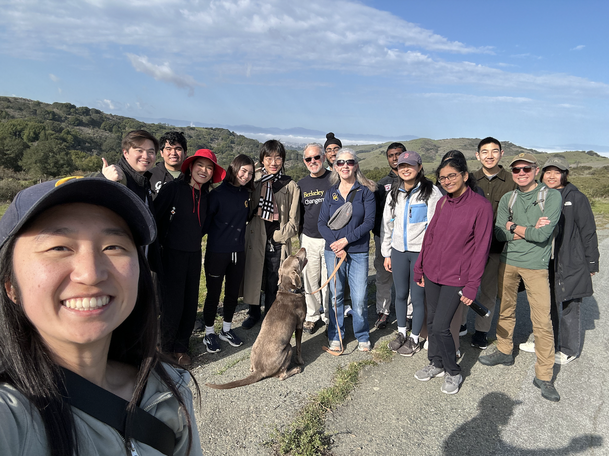
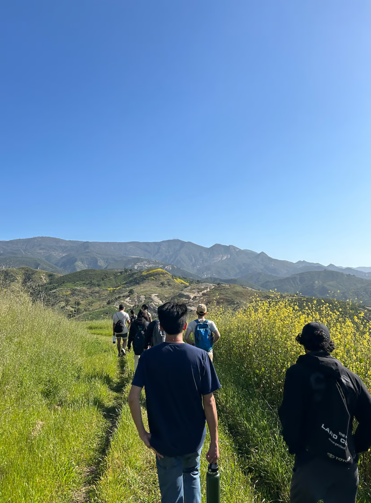

Fire Trails w/ Prof. Alex Filippenko (Astrophysics)
Berkeley, CA
Personal
📚 Books
Some books I still think about.
- We Might Just Make It After All: My Best Friendship with Kate Spade by Elyce Arons
- The Philosopher of Palo Alto by John Tinnell
- The Empathy Diaries by Sherry Turkle
- What I Talk About When I Talk About Running by Haruki Murakami
- The Worlds I See: Curiosity, Exploration, and Discovery at the Dawn of AI by Fei-Fei Li
- Wild Problems: A Guide to Decisions That Define Us by Russell Roberts
- The Passion Paradox by Brad Stulberg and Steve Magness
- How to Take Smart Notes by Sönke Ahrens
- Deep Work by Cal Newport
- Exhalation by Ted Chiang
- The Almanack of Naval Ravikant: A Guide to Wealth and Happiness by Eric Jorgenson
- Man’s Search for Meaning by Viktor Frankl
- The Ride of a Lifetime by Bob Igor
- Beloved by Toni Morrison
- The Bell Jar by Sylvia Plath
- Educated by Tara Westover
- The Grapes of Wrath by John Steinbeck
🥾 Hikes
I love hiking. Here are some of my favorite hikes.


Fire Trails w/ Prof. Carolyn Stein (Economics)
Berkeley, CA
Berkeley, CA

Inspiration Point w/ Chancellor Rich Lyons + Jen Lyons
Berkeley, CA
Berkeley, CA
Marina Trail w/ Prof. Cathryn Carson (History)
Berkeley, CA
Berkeley, CA
Fire Trails w/ Prof. Rhonda Righter (Industrial Engineering)
Berkeley, CA
Berkeley, CA

Skyline Loop w/ Amazon Interns
Mount Rainier, WA
Mount Rainier, WA

Saddle Rock w/ Prof. Jessica Santana (Business)
Santa Barbara, CA
Santa Barbara, CA

Canyon and Ridgetop w/ Prof. Alex Franks (Statistics)
Santa Barbara, CA
Santa Barbara, CA
Toro Canyon Ridge w/Prof. Chongzheng Wei (Psychology)
Santa Barbara, CA
Santa Barbara, CA

Atascadero Loop w/ Prof. Thomas Barrett (Philosophy)
Santa Barbara, CA
Santa Barbara, CA

Mission Peak w/ Family
Fremont, CA
Fremont, CA

Ellewood & Sands Bluff w/ Prof. Ernest Freund (Physics)
Santa Barbara, CA
Santa Barbara, CA

Cold Spring Loop w/ Prof. Max Wilson (Biology)
Santa Barbara, CA
Santa Barbara, CA

Seven Falls w/ Prof. Ryoko Ono (Ecology)
Santa Barbara, CA
Santa Barbara, CA